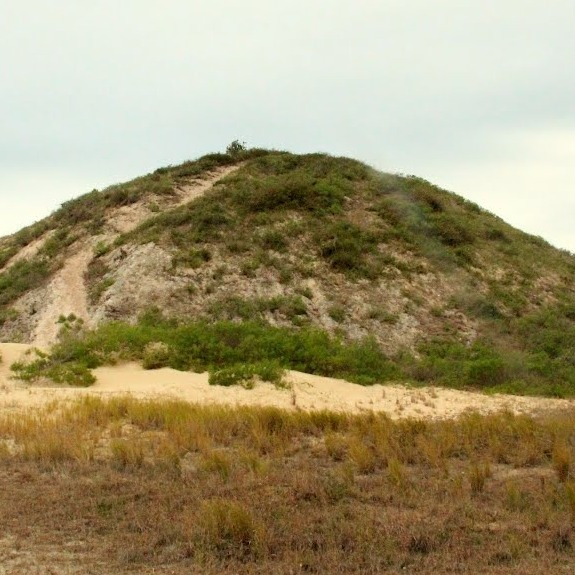
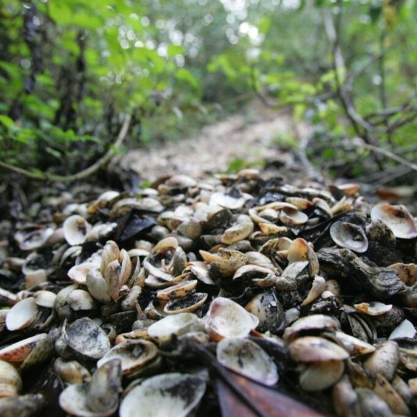

Sambaqui: Janelas para o Passado Pré-Histórico do Brasil
Os sambaquis são construções artificiais, ou seja, feitas de maneira não natural. São constituídas principalmente de conchas e moluscos, podendo ser restos de refeições ou coletados especificamente para a edificação da estrutura. Não se sabe ao certo as sua função ou porque eram construídos, só se sabe que eram de grande importância já que há inúmeros resíduos de rituais e eram extremamente demorados para serem concluídos, podendo demorar por volta de 500 anos para serem terminados, porém uma das teorias mais aceitas é a de que eram construídos como estações de coleta, pesca e caça.
“A palavra “sambaqui” está etimologicamente relacionada a duas palavras de origem tupi: “tambá”, que significa moluscos, e “qui”, que significa monte” (LamingEmperaire, 1975; Prous, 1992 apud VILLAGRAN, 2012).
Origem dos Sambaquis:
A Baía Babitonga foi habitada há cerca de 3.000 anos por caçadores e coletores sambaquianos, os homens do sambaqui. (HINSCHING, Fernando. 2019).
Na Baía da Babitonga contém uma grande concentração de montes de conchas e intermediários pré-colombianos. O confronto é com o que resta do litoral brasileiro. Ou o que costumava ser dele, visto que conforme ocorreu o desenvolvimento do país, grande parte foi sendo destruída ou modificada. (MESQUITA, João. 2019)
Em alguns lugares, são encontrados neles também, uma grande concentração de fogueiras, camadas de cinzas e buracos de estaca, usados para o descarte de conchas e demais resíduos até as laterais do morro. (VILLAGRAN, 2012).
Outra dúvida recorrente é: Eles são ou não homo-sapiens? Eles eram de fato Homo sapiens sapiens e vieram para o sul da América (mais especificamente no Brasil), por volta dos seis mil anos atrás, que é justamente, quando ocorre o período onde a temperatura passa a ser aproximada com a dos dias atuais. (KLUEGER, 2005).
Importância Arqueológica:
Sua importância de preservação se dá, pois com os sambaquis, pode-se garantir um material mais amplo para a pesquisa e assim, nos permite traçar o modo de vida da sociedade sambaquieira. Estudar os sambaquis trás sérios reflexos sobre a percepção que pode-se obter desse povo antigo. (GASPAR, 1999).
Mas afinal como esse povo chegou aqui? Segundo a teoria de Bering, o homo-sapiens chegou na América pelo Estreito de Bering, que localiza-se entre o extremo leste do continente asiático e o extremo oeste do continente americano, esses pontos encontram-se separados por 85 km. Como diz esta teoria, a chegada do homo-sapiens ao continente americano teria acontecido, a cerca de 50 mil anos, quando nômades asiáticos teriam atravessado o Estreito de Bering; que nesta época era encontrado congelado por conta da era glacial, instaurando assim uma ponte natural entre os dois pontos. Daí em diante o homem mudou-se até a parte meridional do continente americano. (FREITAS, Eduardo. 2023)
“os sítios mais antigos parecem indicar que houve uma primeira migração de Homo sapiens vindo da Europa ou da África, pois estão mais próximos do oceano Atlântico. Além disso, o sistema de correntes marítimas e dos ventos favorece possíveis passagens, em embarcações rudimentares” (GUIDON: 2005, p. 15 apud BANDEIRA, 2011).
Mas não deve-se confundir, nem todo sambaqui possui sepultamentos, mesmo que a taxa de sambaquis com sepultamentos seja altíssima (cerca de 80% a 90% deles tenham), para um sambaqui ser o que é, ele não precisa ter necessariamente, afinal de contas, há vestígios de uma grande quantidade de adornos, ferramentas, material de pesca e ossos humanos.
REFERÊNCIAS
FREITAS, Eduardo. "Como o homem chegou à América? "; Brasil Escola. Disponível em: https://brasilescola.uol.com.br/geografia/como-homem-chegou-america.htm. Acesso em 26 Abr. 2023.
GASPAR, Madu. Sambaqui: arqueologia do litoral brasileiro. Editora Schwarcz-Companhia das Letras, 1999. Acesso em: 30 Abr. 2023.
HINSCHING, Fernando. “Baía Babitonga - História”; Cortina do Passado. Disponível em: https://cortinadopassado.com.br/2019/08/02/baia-babitonga-historia/. Acesso em: 26 Abr. 2023.
KLUEGER, Urda Alice. O povo das conchas. Hemisfério Sul, 2004. Acesso em: 24 Abr. 2023.
MESQUITA, João. Baía de Babitonga: exploração humana igual há 6 mil anos - Mar Sem Fim. Disponível em: https://marsemfim.com.br/baia-de-babitonga-exploracao-humana-igual-ha-6-mil-anos/ Acesso em: 27 Abr. 2023
VILLAGRAN, Ximena Suarez et al. Micromorfologia de sítios concheiros da América do Sul: Arqueoestratigrafia e processos de formação de Sambaquis (Santa Catarina, Brasil) e concheros (Terra do Fogo, Argentina). Universidade de São Paulo, Terra do Fogo, Argentina, 2012. Disponível em: https://www.researchgate.net/profile/Ximena-Villagran/publication/343999545_Micromorphology_of_South_American_shell-matrix_sites_archaeostratigraphy_and_site_formation_processes_of_shell_mounds_Santa_Catarina_Brazil_and_shell_middens_Tierra_del_Fuego_Argentina/links/5f4d576b299bf13c506d0f92/Micromorphology-of-South-American-shell-matrix-sites-archaeostratigraphy-and-site-formation-processes-of-shell-mounds-Santa-Catarina-Brazil-and-shell-middens-Tierra-del-Fuego-Argentina.pdf. Acesso em: 26 Abr. 2023.